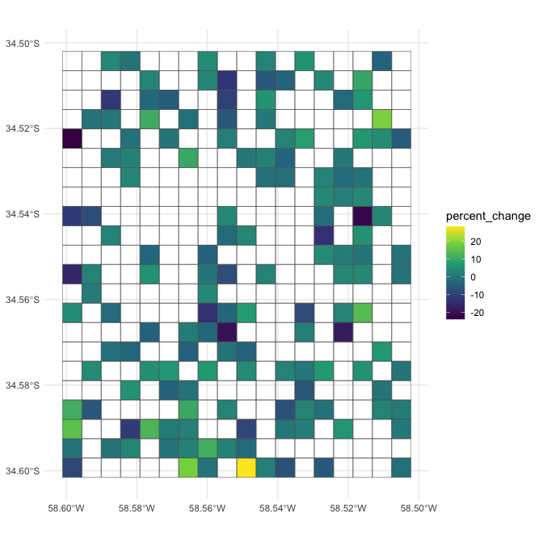
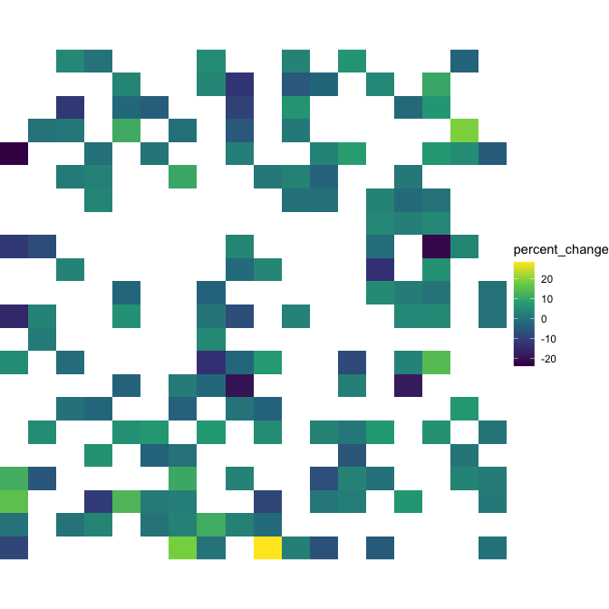
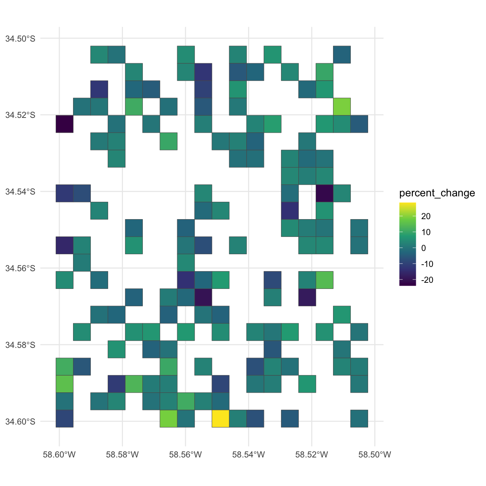
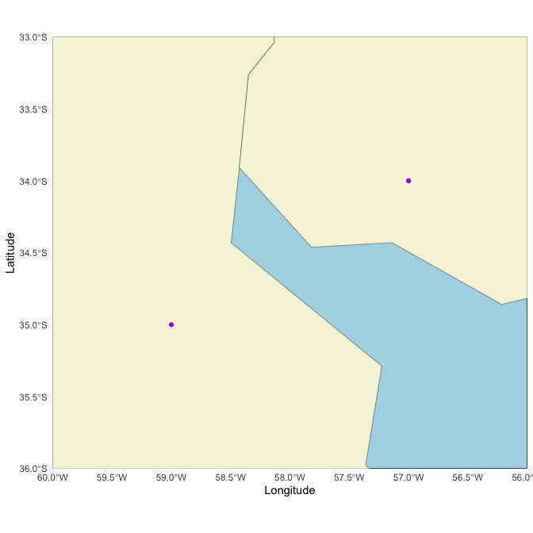
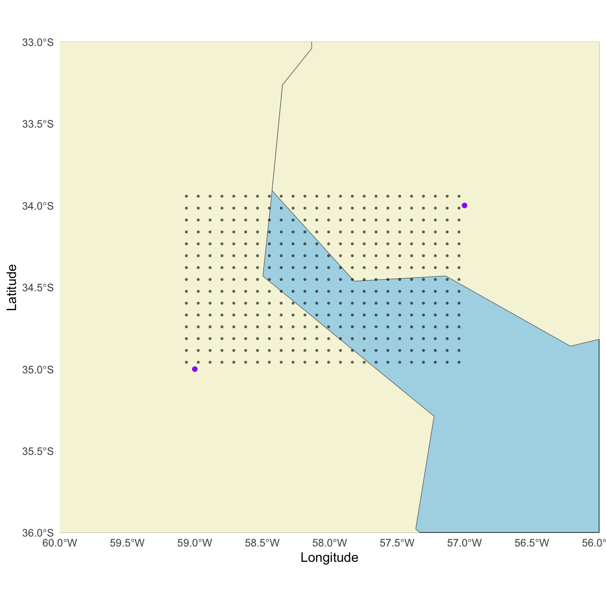
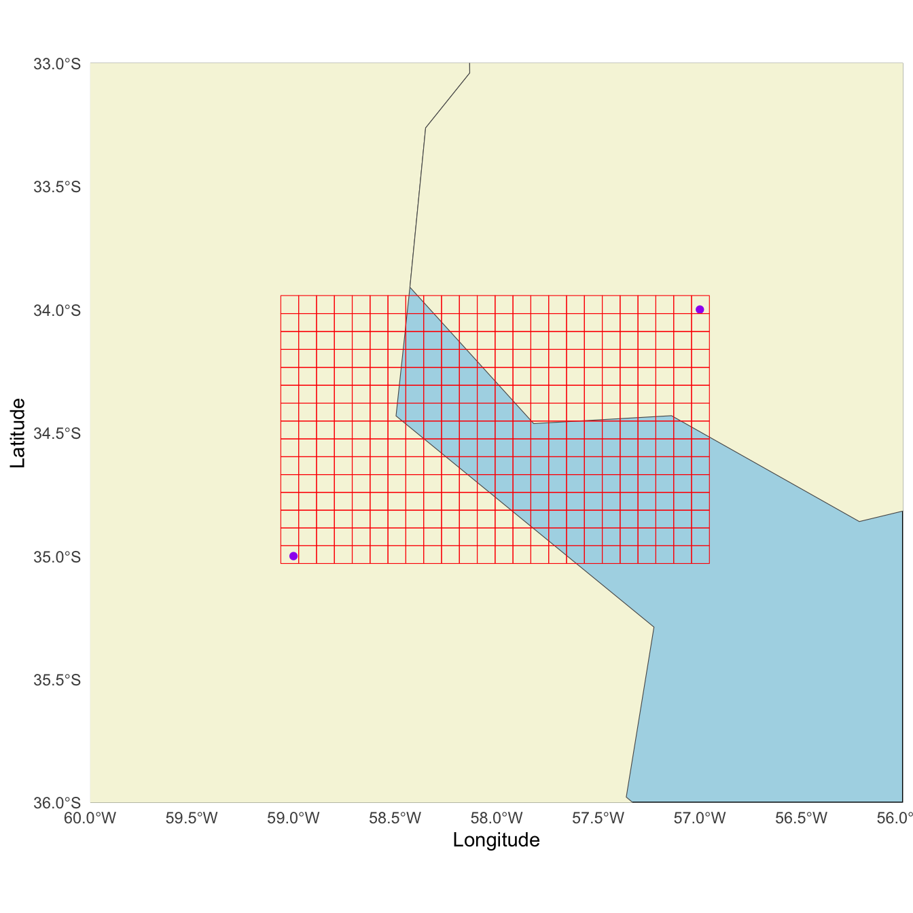
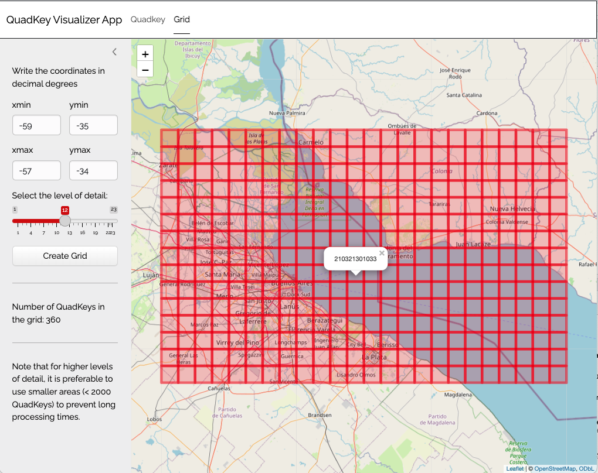
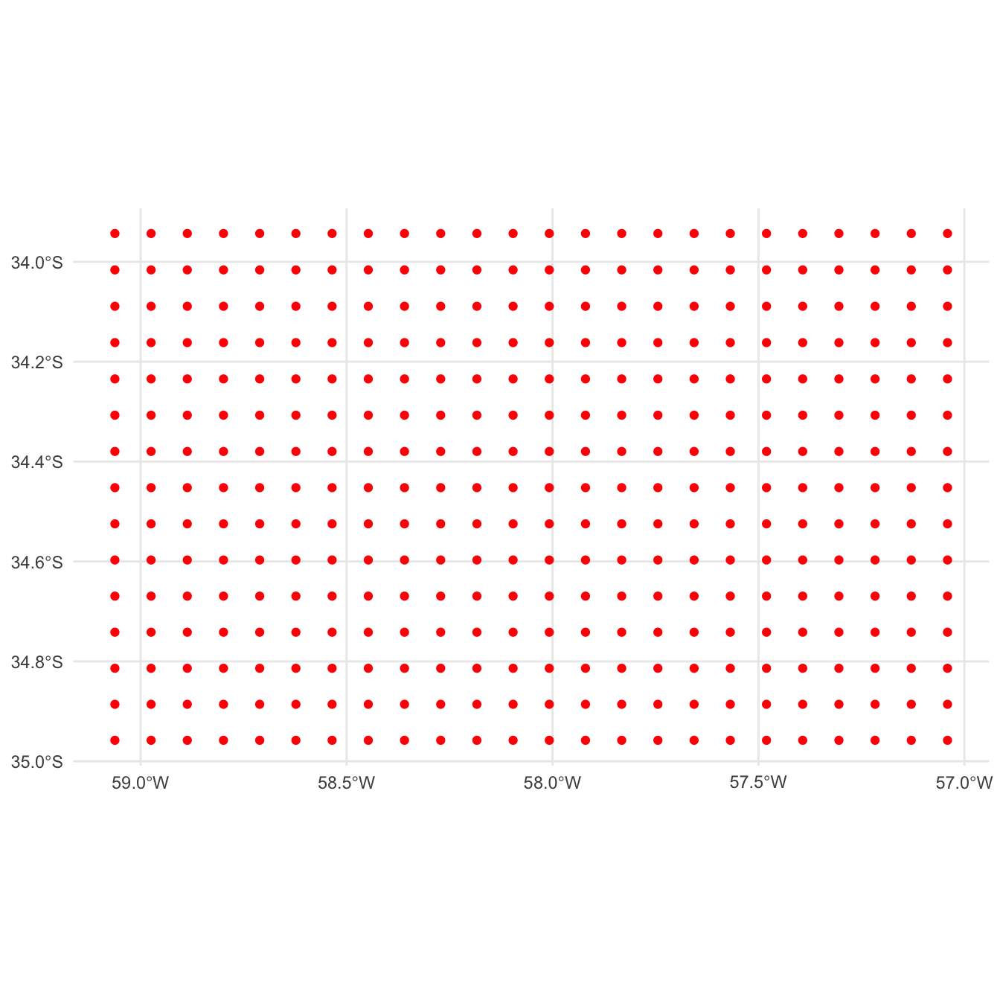
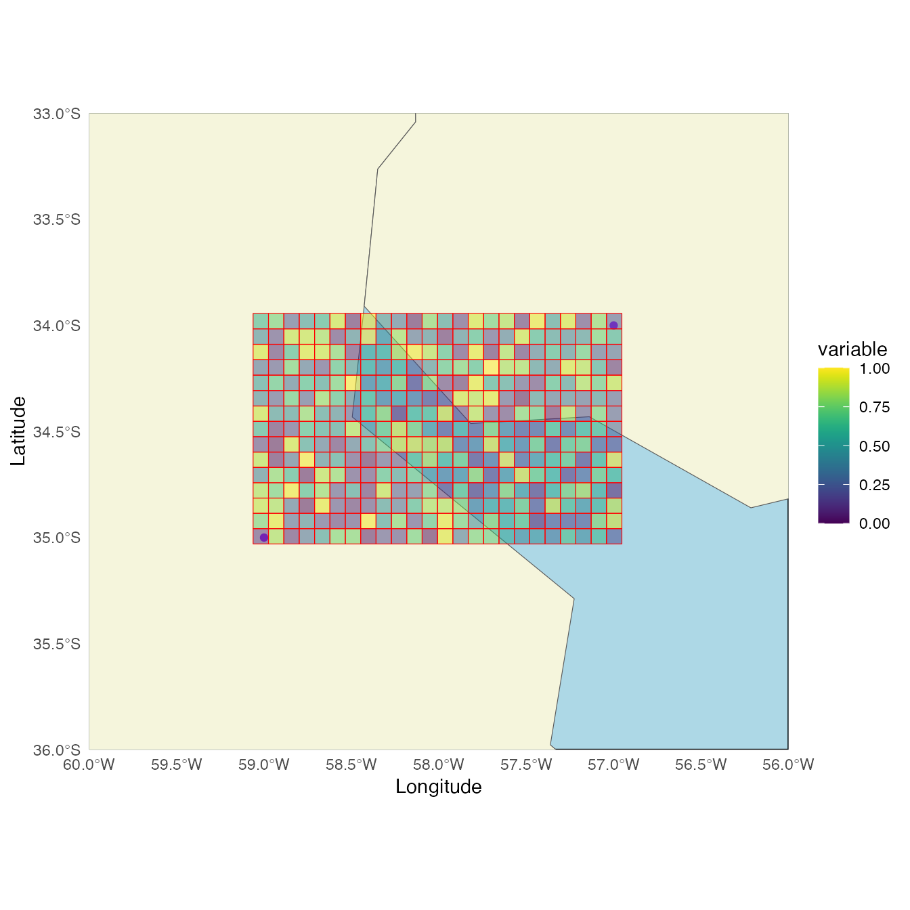

Generating a Raster Image from Quadkey-Identified Data
Source:vignettes/quadkey_identified_data_to_raster.Rmd
quadkey_identified_data_to_raster.RmdPlease, visit the README for general information about this package
Create a raster from QuadKey-identified data for a specified map area
and zoom level. A detailed explanation of what tile coordinates
(tileX, tileY) and pixel coordinates
(pixelX, pixelY) are can be found in
quadkeyr vignette From
QuadKey to Simple Features data.frame and other conversions and in
the official
documentation.
1 Basic workflow

If you are working with a data.frame with a quadkey
column, as shown as INPUT in the example image, you can visualize the
data by combining the QuadKeys’ spatial information with any other
reported variable. For example, let’s read an example dataset:
# read the file with the data
path <- paste0(system.file("extdata", package = 'quadkeyr'),
"/cityA_2020_04_15_0000.csv")
data <- read.csv(path)
data <- format_fb_data(data)
head(data)
#> X lat lon quadkey date_time n_crisis percent_change
#> 1 1 -34.58574 -58.55438 2103213001233302 2020-04-15 NA 2.863940
#> 2 2 -34.51335 -58.57635 2103213001213202 2020-04-15 NA -2.600991
#> 3 3 -34.59026 -58.57086 2103213001233221 2020-04-15 NA 1.460141
#> 4 4 -34.52692 -58.54340 2103213001231110 2020-04-15 NA 2.607693
#> 5 5 -34.53145 -58.52692 2103213001320003 2020-04-15 NA 3.242862
#> 6 6 -34.52692 -58.58734 2103213001230110 2020-04-15 NA 1.172856
#> day hour
#> 1 2020-04-15 NA
#> 2 2020-04-15 NA
#> 3 2020-04-15 NA
#> 4 2020-04-15 NA
#> 5 2020-04-15 NA
#> 6 2020-04-15 NA1.1 Converting QuadKey-identified data to raster images
To create the raster, it is preferable to work with a regular grid. That is why we need to ensure that we have all the QuadKeys covering the bounding box we want to study.
The function add_regular_polygon_grid() retrieves all
the QuadKeys required to fill the bounding box created with the QuadKeys
provided in the quadkey column. The additional QuadKeys
added in the process will have NA values for all columns
except quadkey and geometry.
If you are unsure whether your grid is complete, you can still run
the function, and it will return the same sf POLYGON
data.frame without any extra rows.
complete_polygon_grid <- add_regular_polygon_grid(data = data)
complete_polygon_grid
#> $data
#> Simple feature collection with 396 features and 9 fields
#> Geometry type: POLYGON
#> Dimension: XY
#> Bounding box: xmin: -58.60107 ymin: -34.60156 xmax: -58.5022 ymax: -34.50203
#> Geodetic CRS: WGS 84
#> # A tibble: 396 × 10
#> quadkey X date_time n_crisis percent_change day hour tileX tileY
#> * <chr> <dbl> <chr> <dbl> <dbl> <date> <dbl> <dbl> <dbl>
#> 1 2103213… 150 2020-04-… NA 2.29 2020-04-15 NA 22112 39481
#> 2 2103213… 149 2020-04-… 212. 0.848 2020-04-15 NA 22114 39472
#> 3 2103213… 148 2020-04-… NA 28.4 2020-04-15 NA 22109 39488
#> 4 2103213… 147 2020-04-… 179. 3.75 2020-04-15 NA 22102 39467
#> 5 2103213… 146 2020-04-… 20.3 2.81 2020-04-15 NA 22106 39487
#> 6 2103213… 145 2020-04-… NA -12.8 2020-04-15 NA 22108 39468
#> 7 2103213… 144 2020-04-… 127. -5.37 2020-04-15 NA 22108 39470
#> 8 2103213… 143 2020-04-… NA 6.60 2020-04-15 NA 22116 39482
#> 9 2103213… 142 2020-04-… NA 3.16 2020-04-15 NA 22116 39485
#> 10 2103213… 141 2020-04-… NA -2.84 2020-04-15 NA 22108 39480
#> # ℹ 386 more rows
#> # ℹ 1 more variable: geometry <POLYGON [°]>
#>
#> $num_cols
#> [1] 18
#>
#> $num_rows
#> [1] 22As you can see in the following plot, we obtain a regular polygon grid where only the QuadKeys that are reported with values for the variable of interest are colored.
The function add_regular_polygon_grid() returns three
outputs in a list: - data - num_cols and; -
num_rows.
The number of columns and rows will be useful in the next step.
ggplot() +
geom_sf(data = complete_polygon_grid$data,
aes(fill = percent_change)) +
scale_fill_viridis_c(na.value = "transparent") +
theme_minimal()
After obtaining the regular polygon grid,
we can create a STARS
object using the function create_stars_raster.
stars_object <- create_stars_raster(data = complete_polygon_grid$data,
template = complete_polygon_grid$data,
var = "percent_change",
nx = complete_polygon_grid$num_cols,
ny = complete_polygon_grid$num_rows)
stars_object
#> stars object with 2 dimensions and 1 attribute
#> attribute(s):
#> Min. 1st Qu. Median Mean 3rd Qu. Max. NA's
#> percent_change -23.94377 -2.50754 1.109488 0.6168087 3.838209 28.42059 246
#> dimension(s):
#> from to offset delta refsys point x/y
#> x 1 18 -58.6 0.005493 WGS 84 FALSE [x]
#> y 1 22 -34.5 -0.004524 WGS 84 FALSE [y]
ggplot() +
geom_stars(data = stars_object) +
coord_equal() +
theme_void() +
scale_fill_viridis_c(na.value = "transparent") +
scale_x_discrete(expand=c(0,0))+
scale_y_discrete(expand=c(0,0))
1.2 Quadkeys as polygons
If you want to visualize the QuadKeys without creating a raster
image, you also have the option of converting the QuadKeys into an
sf POLYGON data.frame using the function
quadkey_df_to_polygon(), and then plotting it.
# create polygon column
poly_data <- quadkey_df_to_polygon(data = data)
poly_data
#> Simple feature collection with 150 features and 9 fields
#> Geometry type: POLYGON
#> Dimension: XY
#> Bounding box: xmin: -58.60107 ymin: -34.60156 xmax: -58.5022 ymax: -34.50203
#> Geodetic CRS: WGS 84
#> First 10 features:
#> X lat lon quadkey date_time n_crisis percent_change
#> 1 1 -34.58574 -58.55438 2103213001233302 2020-04-15 NA 2.8639400
#> 2 2 -34.51335 -58.57635 2103213001213202 2020-04-15 NA -2.6009911
#> 3 3 -34.59026 -58.57086 2103213001233221 2020-04-15 NA 1.4601414
#> 4 4 -34.52692 -58.54340 2103213001231110 2020-04-15 NA 2.6076928
#> 5 5 -34.53145 -58.52692 2103213001320003 2020-04-15 NA 3.2428621
#> 6 6 -34.52692 -58.58734 2103213001230110 2020-04-15 NA 1.1728565
#> 7 7 -34.51787 -58.59283 2103213001212321 2020-04-15 13.07492 -0.3100404
#> 8 8 -34.58574 -58.59833 2103213001232302 2020-04-15 NA 11.4323758
#> 9 9 -34.56764 -58.52142 2103213001322012 2020-04-15 NA -18.2960744
#> 10 10 -34.55407 -58.59833 2103213001230320 2020-04-15 NA -15.7189196
#> day hour geometry
#> 1 2020-04-15 NA POLYGON ((-58.55713 -34.588...
#> 2 2020-04-15 NA POLYGON ((-58.5791 -34.5156...
#> 3 2020-04-15 NA POLYGON ((-58.57361 -34.592...
#> 4 2020-04-15 NA POLYGON ((-58.54614 -34.529...
#> 5 2020-04-15 NA POLYGON ((-58.52966 -34.533...
#> 6 2020-04-15 NA POLYGON ((-58.59009 -34.529...
#> 7 2020-04-15 NA POLYGON ((-58.59558 -34.520...
#> 8 2020-04-15 NA POLYGON ((-58.60107 -34.588...
#> 9 2020-04-15 NA POLYGON ((-58.52417 -34.569...
#> 10 2020-04-15 NA POLYGON ((-58.60107 -34.556...
ggplot() +
geom_sf(data = poly_data,
aes(fill = percent_change)) +
scale_fill_viridis_c() +
theme_minimal()
2 Advanced use and intermediate functions
The function add_regular_polygon_grid() serves as a
wrapper for three functions: get_qk_coords(),
regular_qk_grid(), and grid_to_polygon().
We will demostrate some of the uses of these functions in isolation:
2.1 Create a Quadkey-identified polygon regular grid
The regular_qk_grid() function generates a regular grid
by utilizing the create_qk_grid() function. To accomplish
this, it necessitates defining the bounding box, specified by
xmin, xmax, ymin, and
ymax, which delineates the area for QuadKey grid creation.
regular_qk_grid() supplies these arguments to
create_qk_grid() by estimating the bounding box from the
QuadKeys provided as an argument. However, if desired, you can manually
input these arguments and use the function by itself.
For this example, we have selected xmin = -59,
xmax = -57 , ymin = -35 and ymax
= -34. Let’s plot them as points.

The QuadKey grid can have a zoom level between 1 (less detail) to 23 (more detail).
The function create_qk_grid() will return three
outputs:
grid$dataa dataframe withtileX,tileYand the QuadKey value for each element of the gridgrid$num_rowsthe number of rows andgrid$num_colsthe number of columns of the grid.
grid <- create_qk_grid(
xmin = -59,
xmax = -57,
ymin = -35,
ymax = -34,
zoom = 12)
head(grid$data)
#> # A tibble: 6 × 3
#> tileX tileY quadkey
#> <dbl> <dbl> <chr>
#> 1 1376 2473 210321302002
#> 2 1377 2473 210321302003
#> 3 1378 2473 210321302012
#> 4 1379 2473 210321302013
#> 5 1380 2473 210321302102
#> 6 1381 2473 2103213021032.1.1 Get the grid coordinates from the QuadKeys
The coordinates are extracted from the QuadKeys using the function
get_qk_coords().
grid_coords <- get_qk_coord(data = grid$data)
head(grid_coords)
#> Simple feature collection with 6 features and 3 fields
#> Geometry type: POINT
#> Dimension: XY
#> Bounding box: xmin: -59.0625 ymin: -34.958 xmax: -58.62305 ymax: -34.958
#> Geodetic CRS: WGS 84
#> # A tibble: 6 × 4
#> tileX tileY quadkey geometry
#> <dbl> <dbl> <chr> <POINT [°]>
#> 1 1376 2473 210321302002 (-59.0625 -34.958)
#> 2 1377 2473 210321302003 (-58.97461 -34.958)
#> 3 1378 2473 210321302012 (-58.88672 -34.958)
#> 4 1379 2473 210321302013 (-58.79883 -34.958)
#> 5 1380 2473 210321302102 (-58.71094 -34.958)
#> 6 1381 2473 210321302103 (-58.62305 -34.958)We can visualize the points in the map to understand better the results.
 We have a grid of points representing the QuadKeys. Remember that these points represent the upper-left corner of each QuadKey, which might give the impression that they do not precisely cover the entire area defined by the initial points.
2.1.2 Conversion to polygons
As we are creating the polygons from a sf POINT
data.frame we can use grid_to_polygon().
polygrid <- grid_to_polygon(grid_coords)
polygrid
#> Simple feature collection with 360 features and 3 fields
#> Geometry type: POLYGON
#> Dimension: XY
#> Bounding box: xmin: -59.0625 ymin: -35.03 xmax: -56.95312 ymax: -33.94336
#> Geodetic CRS: WGS 84
#> # A tibble: 360 × 4
#> # Rowwise:
#> tileX tileY quadkey geometry
#> * <dbl> <dbl> <chr> <POLYGON [°]>
#> 1 1399 2459 210321132133 ((-57.04102 -34.01624, -56.95312 -34.01624, -56.953…
#> 2 1398 2459 210321132132 ((-57.12891 -34.01624, -57.04102 -34.01624, -57.041…
#> 3 1397 2459 210321132123 ((-57.2168 -34.01624, -57.12891 -34.01624, -57.1289…
#> 4 1396 2459 210321132122 ((-57.30469 -34.01624, -57.2168 -34.01624, -57.2168…
#> 5 1395 2459 210321132033 ((-57.39258 -34.01624, -57.30469 -34.01624, -57.304…
#> 6 1394 2459 210321132032 ((-57.48047 -34.01624, -57.39258 -34.01624, -57.392…
#> 7 1393 2459 210321132023 ((-57.56836 -34.01624, -57.48047 -34.01624, -57.480…
#> 8 1392 2459 210321132022 ((-57.65625 -34.01624, -57.56836 -34.01624, -57.568…
#> 9 1391 2459 210321123133 ((-57.74414 -34.01624, -57.65625 -34.01624, -57.656…
#> 10 1390 2459 210321123132 ((-57.83203 -34.01624, -57.74414 -34.01624, -57.744…
#> # ℹ 350 more rows
It worked! As you can see here, the coordinates we randomly selected as a starting point for the bounding box are situated within the polygons, but not at a specific position inside each polygon. This was expected, you can read about Quadkey conversion in the vignette Bing Maps Tile System Functions.
If you want to see the grid, you can also check the app:

2.2 Raster creation
Let’s generate the raster. data_provided is an example
QuadKey-identified data.frame.
data('data_provided')
head(data_provided)
#> quadkey variable
#> 1 210321132133 0.22
#> 2 210321132311 0.56
#> 3 210321132313 0.27
#> 4 210321132331 0.06
#> 5 210321132333 0.88
#> 6 210321310111 0.22The function get_qk_coord() allow us converting the data
to an sf POINT data.frame keeping our variable of
interest.
data_sfpoint <- get_qk_coord(data = data_provided)
head(data_sfpoint)
#> Simple feature collection with 6 features and 4 fields
#> Geometry type: POINT
#> Dimension: XY
#> Bounding box: xmin: -57.04102 ymin: -34.30714 xmax: -57.04102 ymax: -33.94336
#> Geodetic CRS: WGS 84
#> quadkey variable tileX tileY geometry
#> 1 210321132133 0.22 1399 2459 POINT (-57.04102 -33.94336)
#> 2 210321132311 0.56 1399 2460 POINT (-57.04102 -34.01624)
#> 3 210321132313 0.27 1399 2461 POINT (-57.04102 -34.08906)
#> 4 210321132331 0.06 1399 2462 POINT (-57.04102 -34.16182)
#> 5 210321132333 0.88 1399 2463 POINT (-57.04102 -34.23451)
#> 6 210321310111 0.22 1399 2464 POINT (-57.04102 -34.30714)
In this case, it seems we are working with a regular grid, so we can
skip regular_qk_grid(). If you execute it, it will only
confirm with a message and return the same sf POINT
data.frame. This function returns a list, providing you with the number
of columns and rows that we will have to introduce as arguments of
create_stars_raster()
data_raster <- regular_qk_grid(data = data_sfpoint)
head(data_raster)
#> $data
#> Simple feature collection with 360 features and 4 fields
#> Geometry type: POINT
#> Dimension: XY
#> Bounding box: xmin: -59.0625 ymin: -34.958 xmax: -57.04102 ymax: -33.94336
#> Geodetic CRS: WGS 84
#> First 10 features:
#> quadkey variable tileX tileY geometry
#> 1 210321132133 0.22 1399 2459 POINT (-57.04102 -33.94336)
#> 2 210321132311 0.56 1399 2460 POINT (-57.04102 -34.01624)
#> 3 210321132313 0.27 1399 2461 POINT (-57.04102 -34.08906)
#> 4 210321132331 0.06 1399 2462 POINT (-57.04102 -34.16182)
#> 5 210321132333 0.88 1399 2463 POINT (-57.04102 -34.23451)
#> 6 210321310111 0.22 1399 2464 POINT (-57.04102 -34.30714)
#> 7 210321310113 0.22 1399 2465 POINT (-57.04102 -34.37971)
#> 8 210321310131 0.26 1399 2466 POINT (-57.04102 -34.45222)
#> 9 210321310133 0.16 1399 2467 POINT (-57.04102 -34.52466)
#> 10 210321310311 0.99 1399 2468 POINT (-57.04102 -34.59704)
#>
#> $num_rows
#> [1] 15
#>
#> $num_cols
#> [1] 24
polygon_raster <- grid_to_polygon(data = data_raster$data)
head(polygon_raster)
#> Simple feature collection with 6 features and 4 fields
#> Geometry type: POLYGON
#> Dimension: XY
#> Bounding box: xmin: -59.0625 ymin: -35.03 xmax: -58.97461 ymax: -34.59704
#> Geodetic CRS: WGS 84
#> # A tibble: 6 × 5
#> quadkey variable tileX tileY geometry
#> <chr> <dbl> <dbl> <dbl> <POLYGON [°]>
#> 1 210321302002 0.1 1376 2473 ((-59.0625 -35.03, -58.97461 -35.03, -58.97…
#> 2 210321302000 0.75 1376 2472 ((-59.0625 -34.958, -58.97461 -34.958, -58.…
#> 3 210321300222 0.89 1376 2471 ((-59.0625 -34.88593, -58.97461 -34.88593, …
#> 4 210321300220 0.85 1376 2470 ((-59.0625 -34.8138, -58.97461 -34.8138, -5…
#> 5 210321300202 0.36 1376 2469 ((-59.0625 -34.74161, -58.97461 -34.74161, …
#> 6 210321300200 0.87 1376 2468 ((-59.0625 -34.66936, -58.97461 -34.66936, …Now, we can use the data.frame to create the raster:
raster <- create_stars_raster(template = polygon_raster,
nx = data_raster$num_cols,
ny = data_raster$num_rows,
data = polygon_raster,
var = 'variable')
raster
#> stars object with 2 dimensions and 1 attribute
#> attribute(s):
#> Min. 1st Qu. Median Mean 3rd Qu. Max.
#> variable 0 0.22 0.49 0.5028611 0.76 1
#> dimension(s):
#> from to offset delta refsys point x/y
#> x 1 24 -59.06 0.08789 WGS 84 FALSE [x]
#> y 1 15 -33.94 -0.07244 WGS 84 FALSE [y]
# In case you want to save it:
# write_stars(obj = raster,
# dsn = "raster.tif")